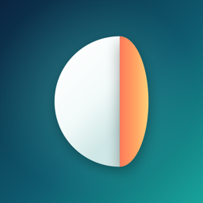

Fold Count+
Count every unfold and fold of your iPhone Duo.
Questions, problems or ideas? Write to fayne.tien@gmail.com. Please include your iPhone model and iOS version.
Requirements
Counting needs iPhone Duo with iOS 27.1 or later. On other iPhones, Fold Count+ shows the counts synced through iCloud from your iPhone Duo.
Set up automatic counting
Fold Count+ counts while it is open. To count every unfold and fold, even when Fold Count+ is closed and after a restart, create two Shortcuts automations once. You need iOS 27.2 or later.
- Open Shortcuts. Open the Shortcuts app and tap + to make a new shortcut.
- Build it yourself. If you see Describe a shortcut, tap ✕ next to it. If the editor doesn't open, tap Edit.
- Add the Opened or Closed trigger. In the actions panel, tap Automation, scroll to Display and tap Opened or Closed, then tap Add.
- Choose Opened. The shortcut should now start with When iPhone is Opened. If it says something else, tap that word and choose Opened. Leave Notify off.
- Add the Fold Count+ action. In the actions panel, scroll through the apps to Fold Count+ and tap it, then tap Record Fold or Unfold. The shortcut now says Record Unfold.
- Name it Unfold. Tap the shortcut's name at the top, choose Rename, type Unfold and tap Done. Then go back.
- Repeat for Closed. Make a second shortcut with steps 1 to 6, but choose Closed in step 4, tap Unfold to change it to Fold, and name it Fold.
- Check it works. Fold and unfold your iPhone, then open Fold Count+. Automatic Counting should say it last ran just now.
Frequently asked questions
Why did my counts go back to zero?
Without Fold Count+ Pro, counts live only while the app is running. They are erased when Fold Count+ closes, including when iOS closes it in the background, and when your iPhone restarts. Fold Count+ Pro saves every count.
How do I restore Fold Count+ Pro?
Open Fold Count+, tap Unlock Pro and then Restore Purchases, using the Apple Account you subscribed or bought it with. Both plans, Monthly and Lifetime, support Family Sharing: members of your family group get Pro too.
How do I cancel the monthly subscription?
In Fold Count+, open Settings and tap Manage Subscription. You can also open the Settings app, tap your name and then Subscriptions. Pro stays unlocked until the end of the month you’ve paid for. Your saved counts stay in iCloud and come back if you subscribe again or buy Lifetime.
Can I switch from Monthly to Lifetime?
Yes. In Fold Count+, open Settings and tap Switch to Lifetime. Then cancel the monthly subscription with Manage Subscription so you aren’t charged again.
My counts aren’t syncing
Syncing needs Fold Count+ Pro, an iCloud account, and iCloud turned on for Fold Count+ in the Settings app. Fold Count+ shows “iCloud Is Off” when it can’t use iCloud. Syncing can take a few minutes, especially after a reinstall.
Automatic Counting says it hasn’t run
Open Shortcuts, tap Automation and check that both automations are on. After deleting and reinstalling Fold Count+, you may need to add the Fold Count+ action to the automations again.
The widgets show a lock
Widgets show counts that have been saved, so they need Fold Count+ Pro.
What counts as an unfold?
Each time your iPhone opens from closed. In Settings › Count you can count unfolds only, or unfolds and folds together.
How do I delete my data?
In Fold Count+, open Settings and tap Reset All Counts. With Fold Count+ Pro this also deletes them from iCloud, and your other devices delete them when they next sync. Counts another device makes while offline, before it receives the reset, may be deleted too. See the Privacy Policy.